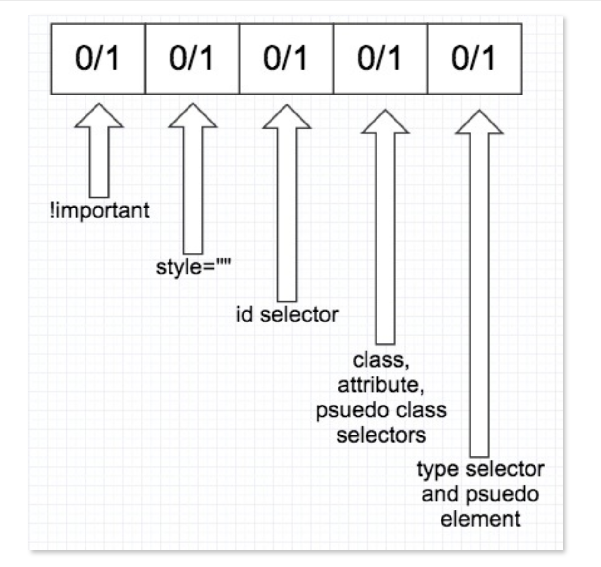
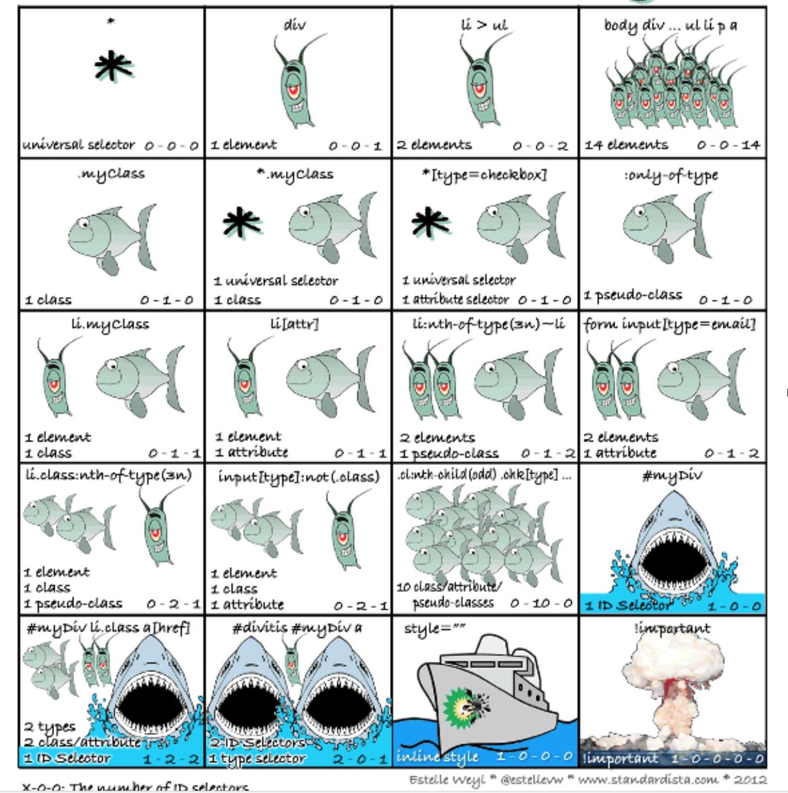
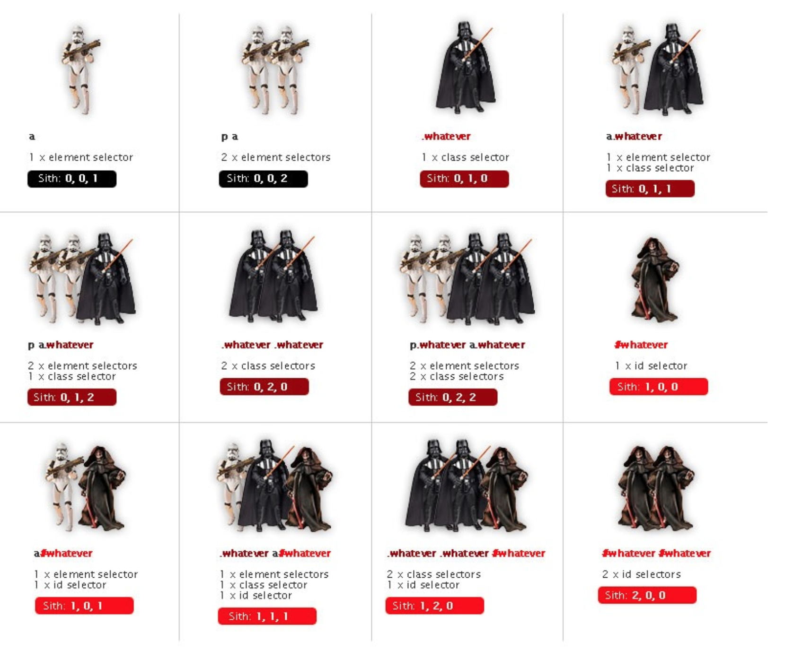

层叠样式表
-
在css刚刚提出的时候，当时已经有过一些样式表语言的建议了，但CSS是第一个含有“层叠”的主意的。在CSS中，一个节点的样式可以从其他的节点的样式表中继承下来。但继承是有条件的，有些样式不适合继承，如宽高等。
CSS如何控制页面
CSS如何控制页面
- 使用HTML+CSS布局页面，其中有个很重要的特点就是
结构
与
表现
相分离
四种样式的优先级
- 行内样式 > 内嵌样式 > 链接样式 > 导入样式
CSS选择器
基本选择器（重点，常用）栗子
- *通配符选择器（＊）
- *元素选择器（E）
- *类选择器（.className）
- *id选择器（#ID）
- *后代选择器（E F）
- *群组选择器（s1,s2,...,sN）
- *子元素选择器(E>F)--ie6不支持
- *相邻兄弟元素选择器(E+F)--ie6不支持
- *通用兄弟选择器（Ｅ~Ｆ）css3
属性选择器
- 对带有指定属性的HTML 元素设置样式，css2 就有，除了ie6外，其他支持较好
属性选择器栗子
- *E[attr=“value”] -- 完全匹配
- *E[attr~=“value"] -- 匹配一个属性值即可
- *E[attr^=“value"] -- 选择attr属性值以“value”开头的所有元素 .demo a[href^=“http://"]
- *E[attr$=“value"] -- 选择attr属性值以”value"结尾的所有元素 .demo a[href$=“png"]
- *E[attr*=“value"] -- 属性值中包含子串”value"的所有元素
- *重点:Ｅ[attr~=“value"]和E[attr*=“value"]
伪类选择器
- *动态伪类：当用户和网站交互的时候体现 如：”:link”,":visited"; “:hover”,”:active"
- *UI元素状态伪类：“:enabled”,”:disabled”,":checked",":unchecked" 主要针对表单元素
- *CSS3的:nth选择器（重要）
- *否定选择器（:not）和jq中的:not选择器一模一样：input:not([type="submit"]) {border:
1px solid red}
- *伪元素、伪类：:first-line,:first-letter,:before,:after,::selection
:nth选择器之:nth-child()栗子
- :nth-child(length)--参数是具体数字，从1开始的整数
- :nth-child(n)--参数是n,n从0开始计算*/
- :nth-child(n*length)--n的倍数选择，n从0开始算
- :nth-child(n+length)--选择大于length后面的元素
- :nth-child(-n+length)--选择小于length前面的元素
- :nth-child(n*length+1)--表示隔几选一
伪元素、伪类
-
CSS中的伪元素：:first-line,:first-letter,:before,:after，CSS3中，增加了一个“::selection”，同时把原来的改成两个冒号了，叫做“伪类”，两个“::”和一个“:”css3中主要用来区分伪类和伪元素，到目前来说，这两种方式都是被接受的
样式优先级
样式优先级-初步
- 首先看样式被引用的方式：行内样式 > 内嵌样式 > 链接样式 > 导入样式
- !important高于一切
样式优先级-权重例子
- 对于”!important"加分高于上面的一切，将变成“1,0,0,0,0”
- 对于行内样式，加为“1,0,0,0”
- 对于选择器中给定的各个ID属性值，加“0,1,0,0”。
- 对于选择器中给定的各个类属性值，属性选择或伪类，加"0,0,1,0"。
- 对于选择器中给定的各个元素为伪元素，加“0,0,0,1”。
- 结合符( + > ~ )和通配符“*”以及”:not()”没有任何的加分权。



下面开始下一个重要概念：
元素类型